CSS
CSS简介
1.CSS语法组成
<style>
选择器
{
声明1;
声明2;
声明3;
}
</style>
注意:
- 属性与属性值以键值对的方式出现(如: color:red;).
- 声明之间使用分号隔开.
2.CSS代码风格
样式书写格式
- 紧凑格式
h1{color:green;font-size=20px;} - 展开格式
大小写
推荐小写字母
空格规范
习惯在冒号后面加一个空格(我认为是为了方便编辑)
如: color: red;
CSS基础选择器
1.标签选择器
定义:以Html标签名作为选择器
语法:
标签名
2.类选择器
作用:单独选择某一class(类)的一个/多个标签
语法:
.类名
选择方法:
- 在要选择的标签里加入class属性: style="class: xxx;"
- 用类选择器修改样式
样式点定义,一个或多个
注意:
- 命名class时不要用数字/中文.
3.类选择器-多类名
定义:在html标签的class属性里可以定义多个类名.
语法:
<div class="xxx1 xxx2"></div>
注意:
- 一定要用空格分开不同类名~
- 标签分别具有这些类名对应的样式.
4.id选择器
定义:在id名前加上'#'表示对id对应元素的选择.
语法:
.id
选择方法:
- 在要选择的标签里加入id属性
- 用id选择器修改样式
id与div区别:
- id属性在整个文档里唯一,不可以重复~
- 每个元素只能有一个id属性~
5.通配符选择器
语法:
*
代表所有标签.
6.基础选择器总结
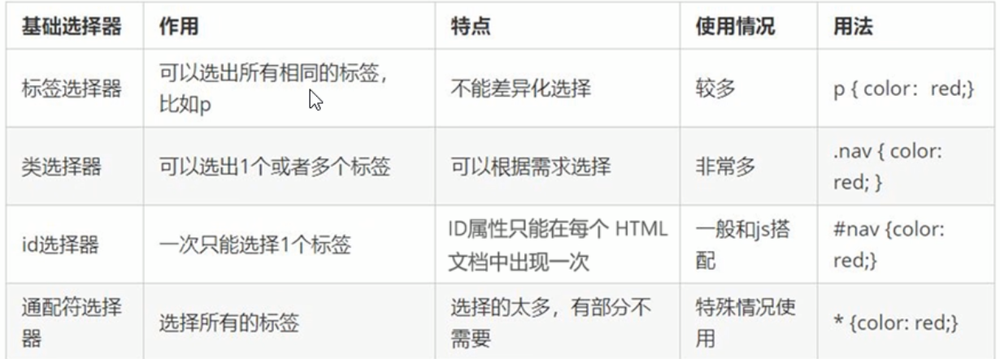
(截取自B站Pink老师视频)
CSS字体属性
1.字体名称
语法规范
font-family: '字体名称1' 字体名称2 字体名称3
注意:
- 可以写多个字体,英文逗号隔开.
- 若字体名字有空格,需用引号包含.
- 从前到后优先级越前越高,显示哪一个由用户有无安装该字体为准.
2.字体大小
单位
- px 像素大小(绝对单位)
- em 当前元素1个文字的大小(相对单位)
语法
font-size: xxx; {xxx:字体大小} 用于修改一般文字
注意:
- chrome默认为16px
- 标题是特殊的,要单独指定文字大小.
拓展:
改标题大小需要单独用: h2{font0-size: xxx;} 修改.
3.字体粗细
语法
font-weight: xxx
可以填入的值:
- normal 正常
- bold 粗体
- bolder 特粗体
- lighter 细体
- number 粗细值(不用写单位)
4.字体样式
语法
font-style: xxx
可以填入的值:
- normal 正常
- italic 斜体
示例:
我喝醉了~
开酒不喝车,喝车不开酒!
5.字体复合属性
语法
font: font-style font-weight font-size/line-height font-family
注意:
- 一定要按顺序
- 空格隔开
- 可以省略前两个和line-height,但一定要保留size和famliy.
我的理解:第一个和第四个都是字符,2和3都是数字.这使得浏览器在解读时,必须至少有两个相邻参数来参照对应含义.而最后两个参数显然是最常用的选择.
CSS文本属性
1.文本颜色
语法
color: 颜色;
颜色表示方式
- 预定义的颜色值 red,green,blue等等
- 16进制颜色值 #ffffff --> 可以两两位分为三个,分别是rgb的三个值的16进制数
- rgb值 rgb(255,255,255) --> 填入十进制颜色代码(0-2^8)
2.对齐文本
语法
text-align {left(默认)/right/center} 水平对齐方式
3.装饰文本
语法
text-decoration: xxx {none/underline/overline/line-through}
示例
瞧!我下面有根线!
瞧!我上面有根线!
瞧!我被删了!
4.文本缩进
制定段落的缩进.
text-indent: 距离
注意:
- 若为负值,向左缩进.
5.行间距
设置行高,控制文字行与行之间距离
line-height: 距离
注意:
- 行高=上间距+文本高度+下间距,上间距=下间距.
- 默认的行高=文本高度.
- 可以利用上间距=下间距的原理实现文本垂直居中,把行高调成与div高度一致即可.
6.总结
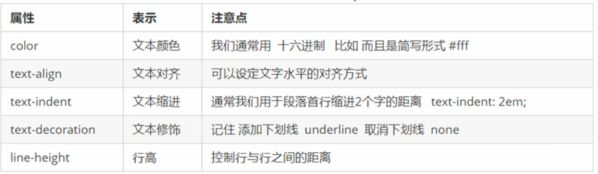
(截取自B站Pink老师视频)
CSS的引入方式
1.分类
- 行内样式表
- 内部样式表
- 外部样式表
2.内部样式表
特点:
- 使用
<style>标签. - 理论上可以放在任何地方，但是一般放于
<head>之中. - 结构清晰，但并未实现结构与样式的完全分离.(还是放到html页面内部了)
3.行内样式表
语法:
style="CSS样式"
特点:
- 直接在标签内部
- 样式需使用双引号括起
- 用于修改简单样式
举例:
<p style="color: red;"></p>
4.外部样式表
语法:
- 在css文件中,只写
<style>内部的样式表内容,不需要管<head>,<style>等标签. - 在html文件中,需要用
<link>建立连接:
link rel="stylesheet" href="css外部样式表文件路径"
[rel:relate,关联]-->关联到样式表
特点:
- 样式单独写在CSS之中,需要引入到页面.
- 结构与样式完全分离.
- 可以用于多个页面.
方法:
- 新建一个.css文件 .
- 通过
<link>标签引入外部样式表.
Emmet语法
1.快速生成Html
语法:
标签名和Tab
快速生成标签标签名*num
快速生成num个标签父标签>子标签
生成嵌套关系标签并列标签+并列标签
生成多个并列的标签.标签名/#标签名 和tab
生成带类或id的标签$
自增符号$可以代替一个随个数递增的变量.
例:.demo$*5会生成从demo1到demo5的标签标签{文字}
自动填入标签内的文字
2.快速生成CSS样式
语法:
属性简写形式和属性值
生成键值对.
例:w200-->width: 100px
复合选择器
1.与基础选择器的关系
- 复合选择器更准确,更高效.
- 复合选择器是由多个基础选择器以不同方式组合而来的.
2.后代选择器
作用
有时候，我们只想选择某个父元素下的子元素，而不是全部.
语法
父元素的选择器 子元素的选择器
特点
- 之间一定要用空格隔开
- 其中的选择器可以是任意基础选择器
- 更改的仅仅是对应的父元素里的子元素，父元素不受影响.
- 后代，不光是儿子，还有孙子（zei），他选择了全部后代.
- 可以写多个元素，一层层查找目标.例:
div ol li，找到div里ol的li并作为目标. - 不需要把所有层级写完，比如
div ol li，也可以直接跨级:div li.
3.子选择器
语法
父元素的选择器>子元素的选择器
特点
- 他会选择亲儿砸，而不会选择亲孙子，曾孙子....
4.并集选择器
作用
一次选择多个元素.
语法
选择器1，选择器2
特点
- 逗号分割
- 可以选择任意选择器，包括基础和复合选择器.
5.伪类选择器
作用
选择不同状态的选择器，为标签添加效果.
链接伪类选择器
语法:
元素的基本选择器(<a></a>）:属性
属性值:
- link
没有访问过的链接 - visited
已经访问过的链接 - hover
[hover:悬空]，当前鼠标所在的链接 - active
还从未点过的链接
注意:
-
链接伪类选择器需要按照LVHA的顺序.[LoVe and HAte:爱与恨]
原因:浏览器会按照优先级进行排序.link和visited的顺序没有关系，因为他们是二选一;而一个标签既可以是没访问过/访问过了也可以上方有鼠标，更下方的样式会覆盖上方. -
<a></a>标签需要专门去指定
因为浏览器已经有默认的链接样式.
:focus 伪类选择器
语法:
元素的基本选择器（<input></input>）:focus
用于表单，当表单元素获取到鼠标的焦点时使用该样式.
尝试一下:
6.总结
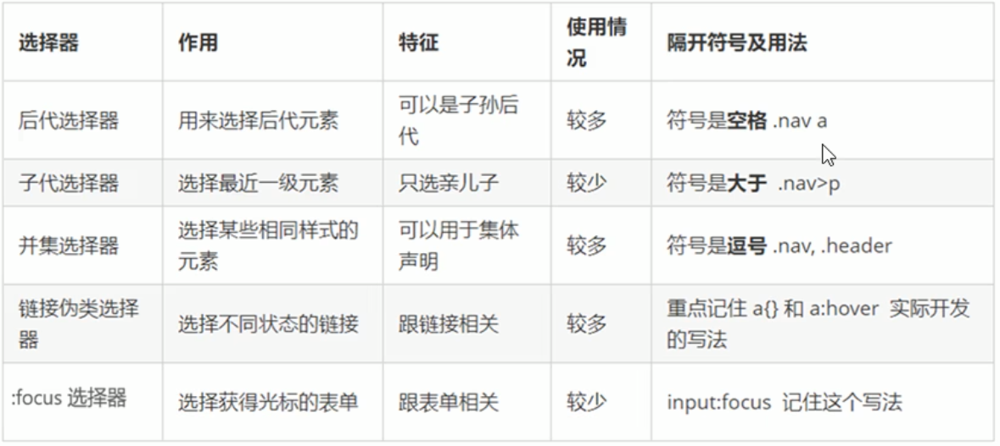
(截取自B站Pink老师视频)
元素的显示模式
1.简介
含义:元素以什么方式去显示.
分类:
- 行内元素
- 行内块元素
- 块元素
2.块元素
特点
- 独占一行
- 可以控制高度，宽度，内边距，外边距.
- 宽度默认是容器的100%.
- 里面可以放各类元素.
(但<h1>-<h6>等文字类块级元素标签不能放其他块级元素)
3.行内元素/内联元素
特点
- 一行多个
- 高宽设置无效，默认宽度就是文字宽度.
- 其中只能容纳文本和其他行内元素.
- 特殊情况:链接里面不能放链接，链接也可以放块级元素，但尽量转化为块级模式再使用.
4.行内块元素
特点
- 一行多个.
- 可以设置宽度，高度，内边距，外边距.
- 默认宽度是本身宽度.
- 里面可以放各类元素.
5.元素显示模式的转换
作用
一种模式的元素需要另外一种模式的特性.
语法
display:block;
转换为块级元素display:inline;
转换为行内元素display:inline-block
转换为行内块元素
CSS背景
1.背景颜色
语法
background-color: {transparent/color}
2.背景图片
语法
background-image: {none/url}
注意:一定要有url().
3.背景平铺
语法
background-repeat: {no-repeat/repeat/repeat-x,repeat-y}
4.背景位置
语法
background-position: {x,y}
注意:
- 可以使用方位名词或精确单位,还可以混合.
支持的方位名词
- top
- center
- bottom
- left
- center
- right
注意:
- 若x，y都是方位名词，则前后没有关系.
- 若只写了一个，则另外一个默认居中.
精确位置
- 百分比
- 像素值px
注意:
- 若x，y都是精确值，则必须是x,y的顺序(只有一个像素值，这个是x，另一个默认居中).
混合
注意:
- 按x,y顺序.
5.背景图像固定
图像与视角相对固定-->视差滚动
语法
background-attachment {scroll/fixed}
[scroll:随对象滚动,fixed:固定]
6.背景简写
语法
background: {颜色,图片地址,平铺模式,滚动与否,位置}
特点
- 没有顺序要求(因为他们的类型都不同,浏览器能够分辨).
7.背景颜色半透明
语法
background: rgba(0,0,0,.0.3);
第四个通道叫做alpha,指不透明程度(0-1).
注意
- 可以省去0-->.3(=0.3)
- 仅背景半透明,盒子里的内容不受影响.
- CSS3新增,IE9+才支持.
8.总结
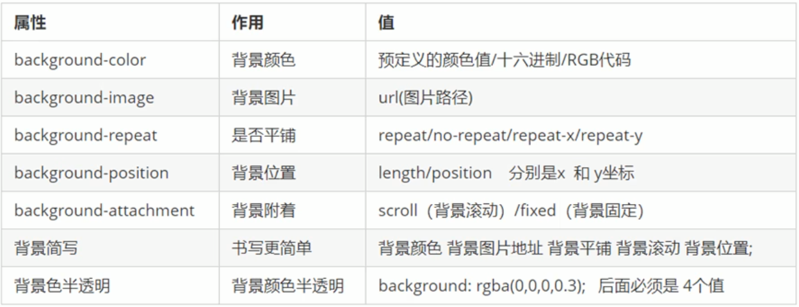
(截取自B站Pink老师视频)
CSS三大特性
1.层叠性
情景
用相同的选择器，给相同的元素设置了某些相同的属性,但属性值不同.
特点
- 就近原则，后来居上
因为浏览器会进行覆盖. - 仅覆盖存在冲突的属性，倘若上方的选择器设置的某个属性，下方没有，那该语句仍然正常执行.
2.继承性
特点
- “子承父业”,子标签会继承父标签的某些样式.
- 主要继承和文字有关的样式（文字样式/对齐...）高度等并不会继承.
继承时相对单位的数值变动
- 百分比/em
会根据父元素的字体大小计算出值，然后继承，继承后不变. - 单数值
会根据子元素字体大小动态调整其所对应的精确数值然后继承，继承后与子元素字体大小有关.
3.优先级
情景
用不同的选择器，给相同的元素设置了某些相同的属性,但属性值不同.
不同选择器的权重
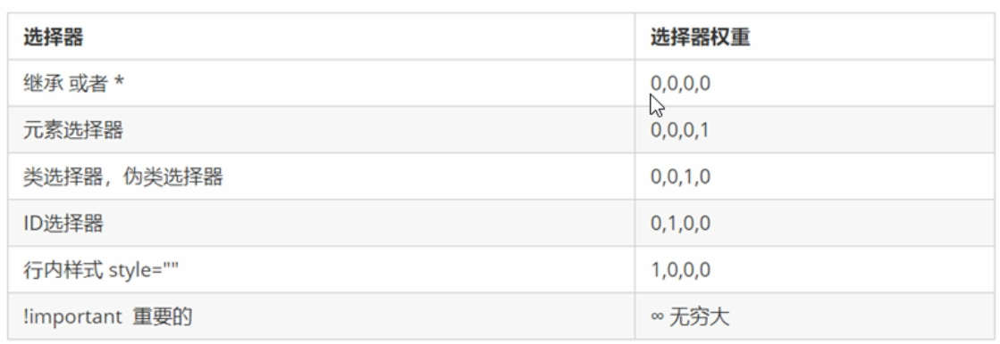
(截取自B站Pink老师视频)
对权重的理解
- 范围越小，权重越大.
类/伪类选择器代表了某一class的元素而id选择器只能选择一个元素.故Id>Class - 距离越近，权重越大.
行内样式表直接在元素标签内部，真可谓是设置到家了.自然比Id重要. - 人为越多，权重越大.
继承是完全自动的，我们并没有专门去设置子元素样式，因此权重最低.
元素选择器选择所有元素中的某一类,而类/伪类选择器必须人为设置class才能被选择,故元素< Class.
复合选择器权重的叠加
- 不论分别是哪种选择器,单独算出来相加即可
ul li权重:0,0,0,1+0,0,0,1=0,0,0,2
.nav li权重:0,0,1,0+0,0,0,1=0,0,1,1
注意
- 表格中的权重数字没有进制.
权重可还有叠加概念啊，倘若是二进制，则只有16个等级，那就意味着三个臭皮匠（2）真能胜过诸葛亮（4）;倘若是十进制也一样，只是臭皮匠多点罢了.这就会和权重的概念相悖.
CSS盒子模型
网页元素基本都是盒子组成的.
1.组成
- border 边框
- content 内容
- padding 内边距 文字等内容距离盒子边框的距离.
- margin 外边距
盒子之间的边距.
2.边框
语法
border-width边框宽度 (单位:px)border-style
边框样式border-color
边框颜色
复合型写法
border: border-width border-style border-colorborder-top/bottom/left/right: border-width border-style border-color
无顺序要求
表格内部边框
倘若只修改table的边框,单元格的边框将不变.
所以需要选择包括th,td在内的所有table子元素:
table,
table td,
table th{
border: 1px solid white;
}
问题: 倘若单元格彼此接触，将会发生叠加，导致看起来更粗.
解决方法: border-collapse:collapse (合并相邻的边框)
边框会影响盒子实际大小
倘若已经设置了宽高,border会把盒子撑开.
解决方案:设置大小时减去双倍边框长度即可.
3.内边距-padding
语法
padding-top/bottom/left/right
代表距离边框内部距离
复合写法
padding: 长度
上下左右空出该值padding: 长度1 长度2
上下空出长度1，左右空出长度2padding: 长度1 长度2 长度3
上空出长度1，左右空出长度2，下空出长度3padding: 长度1 长度2 长度3 长度4
上右下左的顺序
理解:说白了就是从上开始顺时针，第三个值相当于覆盖了第一个在下方的属性值.
注意
1.也会影响盒子实际大小！
倘若盒子本身已经有宽度高度属性，设置padding会撑大.
2.如果盒子没被指定宽度高度，则不会被撑开.
但一旦以任何形式指定（包括100%）便会撑开.
4.外边距-margin
语法
margin-top/bottom/left/right
复合写法
margin: 长度
上下左右空出该值margin: 长度1 长度2
上下空出长度1，左右空出长度2margin: 长度1 长度2 长度3
上空出长度1，左右空出长度2，下空出长度3margin: 长度1 长度2 长度3 长度4
上右下左的顺序
他们各自有10px的margin,所以中间的空隙一共是20px:
应用
1.块级水平居中:
做法:
- 盒子需要设置了宽度
- 左右外边距都设置为auto
语法:
margin: 0 auto;
2.行内元素/行内块元素水平居中
此时不能用margin.但可以当成文字看待,使用text-align: center;
外边距合并--嵌套块塌陷
问题:
以下的div,父元素有margin-top: 20px;,子元素margin-top: 50px;,最终他们一同向下50px,而子元素并未分离.
对于有嵌套关系的块元素,若父元素和子元素都有外边距,则父元素会塌陷其中较大的外边距.
解决方法:
- 为父元素定义上边框/上内边框.
- 给父元素添加
overflow:hidden;.
5.清除内外边距
网页元素自带了一些默认内外边距设置:
- body默认8px外边距
- ul默认40px内边距
- ...
代码:
* {padding: 0;margin: 0;}
6.圆角边框
介绍
border-radius: 数值
原理:
对于border-radius: 10px,相当构建一个10px半径的圆/椭圆,令其与矩形相切于两点时取弧为转角处边框.
使用
- 当使用百分比时,每100%代表一倍长度.
- 想获取圆形时,取正方形,数值设定为50%或宽度的一半.(直径=边长)
- 想获取圆角矩形(两条边都是弧),设置为高度的一半.
- 可以跟多个属性:
border-radius: 左上 右上 右下 左下;
(顺时针顺序) - 可以拆开来写:
border-top/bottom-left/right-radius
7.盒子阴影
语法
box-shadow: h-shadow v-shadow blur spread color inset;
- h-shadow 水平阴影 阴影在x轴上移动,正方向向右.
- v-shadow 垂直阴影
阴影在y轴上移动,正方向向上. - blur 模糊距离-->阴影虚实
越大,越模糊.(光源越近,阴影越实) - spread 阴影大小
- color 阴影颜色
- 内阴影还是外阴影
inset代表内阴影.默认就是outset,但不能填outset.
示例:
外阴影:
内阴影:
鼠标悬空时阴影:
8.文字阴影
语法
text-shadow: h-shadow v-shadow blur color;
尝试一下:
我有阴影
CSS浮动
1.传统网页布局的三种方式
- 普通流/标准流/文档流
标签按照规定好的默认方式排列. - 浮动
- 定位
2.浮动的作用
标准流并不能胜任所有工作,需要改变元素标签默认的排列方式.
纵向找标准,横向找浮动.
3.浮动的含义
创建浮动框,将其移动到边缘,直到左边或右边触及包含块或另一个浮动框的边缘.
4.语法
选择器{float:属性值}
{none/left/right}
5.浮动特性
浮动元素会脱离标准流(脱标)
- 脱标后的盒子不再保留原来的位置.(下方还可以放元素,相当于三维.)
- 如果多个盒子都设置了浮动,则他们会按照属性值一行内显示并且顶端对齐排列;倘若一行装不下了,就会另起一行.
浮动元素都具有行内块元素的特点.
- 可以设置宽高,默认宽度是字符长度.
- 浮动的盒子中间没有缝隙,紧挨在一起.
浮动元素经常和标准流的父级搭配使用
- 先用父元素限定位置,里面再浮动.
- 此时父元素的宽高以及其中其他子元素的某些边框会对它的位置造成限制,但是倘若宽度高度超过了父元素,它并不会撑开盒子,而是直接越过.
6.浮动布局的注意点
- 纵向找标准,横向找浮动.
- 同一盒子中,倘若一个元素浮动,并列的其他元素应当也浮动.
- 浮动盒子只会影响后面的标准流(会压住),不会影响之前的标准流.
7.为什么消除浮动
- 很多时候,父元素高度并不确定(产品很多/长文)
我们希望子元素能够撑开父元素.
倘若使用浮动,因为浮动的子元素不占位置,所以没法撑开.
8.清除浮动语法
选择器{clear:属性值}
{left/right/both}
9.清除浮动方法
额外标签法
找到最后一个浮动的标签,在其之后加入一堵"墙":<div class="clear"></div>,然后在<style>里面加入clear:both;
父级添加overflow
可以给父级添加overflow:hidden/auto/scroll;
优点: 代码简洁
确点: 会切掉溢出的部分.
after伪元素
(.clearfix是父元素的class之一)
.clearfix::after {
content: "";
display: block;
height: 0;
clear: both;
visibility: hidden;
}
.clearfix {
/*IE6、7专有*/
*zoom: 1;
}
优点:只需要在CSS里修改,不需要增加额外标签.
缺点:还得照顾低版本浏览器.
双伪元素清除浮动
.clearfix::before,
.clearfix::after {
content: "";
display: table;
}
.clearfix::after {
clear: both;
}
.clearfix {
*zoom: 1;
}
display: table; 是为了让两堵墙都在一行上,防止挤到不同行.
优点:代码更简洁.
缺点:还得照顾低版本浏览器.
CSS属性书写顺序
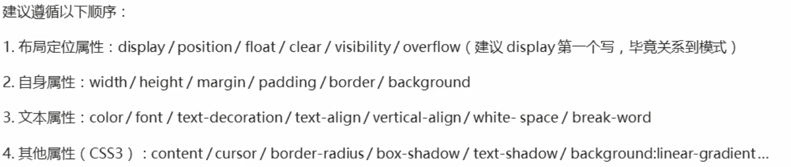 (截取自B站Pink老师视频)
页面布局思路
- 确定版心
版心/可视区 就是一个页面中最核心的区域. - 分析页面中的行模块,然后分析列模块.
- 一行中的列模块经常是浮动布局,先确定每个列的大小,然后确定位置.
- 先有结构,再有样式.
附: 导航栏制作要点
- 不直接用链接a,而是使用li包含a.
原因:
- li+a 语义更清晰
- 直接用a,搜索引擎会认为该网站有堆砌关键字嫌疑,可能被降权,影响排名.
CSS定位
定位可以实现随意指定位置/固定于屏幕位置.
1.定位组成
定位模式
属性:position
属性值:
static
静态定位relative
相对定位absolute
绝对定位fixed
固定定位
边偏移
属性:
topbottomleft-
right -
如果多个方位同时出现,优先执行left和top
2.定位模式-静态定位
一般不用,相当于是标准流.没有边偏移.
3.定位模式-相对定位
语法:
position: relative;
特点:
- 相对于原来位置移动位置（以自己为中心）．
- 原来的位置仍然保留！（不脱标）
4.定位模式-绝对定位
语法:
position: absolute;
特点:
- 移动位置时，相对于祖先元素移动（拼爹型）.
- 如果没有祖先元素或祖先元素没有定位(标准流/浮动)，以浏览器为准.
-->爹不行，娃自己创业. - 如果祖先元素有定位（除静态定位），则以最近一级的祖先元素（包括爷爷）为参考位置.
- 绝对定位不再占有位置（脱离标准流）.
相对定位是灵魂出窍，肉体还在;绝对定位做绝了，直接变成鬼了~
5.子绝父相
子元素绝对定位，父元素需要是相对定位.
推导
- 子元素使用绝对定位，不占有位置而不影响别人.
- 则父元素必须有定位，否则子元素将以浏览器为参照.
- 而父元素只能是相对定位，因为倘若是绝对定位，不保留位置，会影响页面中其他元素.
- 因此对于一个使用绝对定位的子元素，它的某个祖先必须是相对定位才可以正常显示.（总得有一个负责保留位置）
当然，凡事都没有绝对，倘若你的需求比较奇特，其他类型也可能发生.
6.定位模式-固定定位
不管页面怎么运动，其中元素均不动.
语法
选择器{position: fixed;}
特点
- 以浏览器的可视窗口为参照.
- 位置不保留.（脱标）
怎么固定定位在版心一侧位置
1.使用left/right把盒子移动到中间
2.然后使用margin调整与版心位置关系.
7.定位模式-粘性定位
相对定位和固定定位的混合.
语法
选择器{position: sticky;}
特点
- 以浏览器的可视窗口为参照.
- 位置保留，占有原先位置.（脱标）
- 必须添加相对位置才有效.（该相对位置代表什么时候变为固定单位效果）
- 兼容性差，IE不支持.
8.定位叠放顺序
语法
- 可以使用
z-index xx;控制盒子前后次序.
数值可以是正负整数（无单位），数值越大越靠上. - 如果数值一样，后来者居上.
9.定位拓展
绝对定位的盒子居中
加了绝对定位的盒子，不能通过margin: auto;居中.
- left走50%，即走浏览器一半.
- margin-left:负值，往左边走宽度一半.
值得一提的是,该方法可以选择left + margin-left,不选择left + margin-right,原因是left设置左边框与中线重合,负值可以使得左边框向右,达到整体居中的效果,而margin-right不可以,此时与右边框的位置无关.
此法可以把left换成四个方位,可以达到水平/垂直居中的效果.
定位特殊特性
- 行内元素使用定位之后,可以直接设置宽度高度.
- 块级元素使用定位之后,默认大小是内容的大小.
- 脱标的盒子不会触发外边距塌陷问题.
绝对定位/固定定位 会完全压住盒子
- 浮动元素只会压住下面标准流的盒子，但是不会压住下面标准流的文字/图片.
--> 因为浮动最初的目的就是为了文字环绕效果. - 绝对定位会完全压住标准流.
显示隐藏元素
本质:让一个元素在页面中显示/隐藏.
1.display
设置一个元素如何显示.
-
display:none/block/...;
隐藏对象.
display隐藏元素之后,元素不占有之前位置. -
display:block;
既有转换成块级元素之意,也表示显示该元素.
2.visibility
visibility: visible/hidden/...
visibility隐藏元素之后,元素仍然占有之前位置.
3.overflow溢出
仅对溢出的内容进行隐藏.
语法
overflow:
- visible
- hidden
- scroll
溢出部分显示滚动条. - auto
在需要的时候添加滚动条.
注意
- 对于有定位的盒子,慎用
overflow:hidden,因为它会隐藏其多余的部分.
4.练习
- 技巧: 当需要某个盒子被鼠标悬空后，其中的某个子元素变化样式，可以:
父元素选择器:hover 子元素选择器
CSS高级技巧
1.精灵图技术
作用
网页中常用到很多小图片,为了减轻服务器压力,提高加载速度.
原理
整合到一张大图片之中.然后裁剪出小图片.
使用
- 针对背景图片(较为固定的小图),经常需要更换的图片最好单独请求.
- 使用
background-position控制,左上角是原点. - 一般往上往左移动,是负值.
2.字体图标
优点
- 易于更换且支持常见变换.
- 图片文件占用空间较大,而字体图标不会.
- 减少了服务器请求.
- 不会失真.(矢量图)
- 兼容性好.
缺点
- 只能做结构样式比较简单的小图标,并不能完全替代精灵图.
下载字体图标
在网上选择并下载:
http://icomoon.io
http://www.iconfont.cn
引入字体图标
1.下载的字体压缩包内会有一个层叠样式表文件，打开并复制:
@font-face {
font-family: 'icomoon';
src: url('fonts/icomoon.eot?42qsf7');
src: url('fonts/icomoon.eot?42qsf7#iefix') format('embedded-opentype'),
url('fonts/icomoon.ttf?42qsf7') format('truetype'),
url('fonts/icomoon.woff?42qsf7') format('woff'),
url('fonts/icomoon.svg?42qsf7#icomoon') format('svg');
font-weight: normal;
font-style: normal;
font-display: block;
}
2.打开压缩包内示例demo.html,拷贝图标后面的小方框.
3.在需要使用的地方style里指定字体:
style="font-family: 'icomoon';"
示例:
添加新的字体图标
1.打开网站,点击左上角import icons.
2.选择压缩包里的selection.json并上传,重新选择.
3.下载替换即可.
3.CSS三角
原理
记得以前的边框吗?当边框比较粗并且颜色不一致的时候，你可能会发现它是怎样拼接而成的：
看到右边了吗？真神奇！它的边缘实际上是三角形凸起，以达到“公平”.
那倘若一个盒子只有边框,没有宽度高度呢？
Holy shit! 它竟然完全分为了三角形!
原理就是我们人为地保留边框的边缘,迫使转角处两两组合成为三角形.倘若把另外三条边框设为透明，就可以出来一个标准的三角形.
我们可以通过这点控制三角形大小/颜色/方向/比例:
方向:
比例:
但可别高兴地太早!现在是四条边框,那么三条/两条甚至一条可以显示么?
3:
CSS代码
width: 0;
height:0;
/*照顾低版本浏览器:*/
line-height: 0;
font-size: 0;
/*照顾完了*/
border: 10px solid transparent;
border-bottom: 10px solid red;
4.CSS用户页面样式
更改用户鼠标样式 cursor
cursor: default/pointer/move/text/not-allowed
取消表单轮廓线
input{
outline: none;
}
示例:
不允许拖动文本域
语法:
resize: none;
示例:
原始:
现在:
5.行内块和文字垂直居中
使用场景:
块级元素和行内块元素.
语法:
vertical-align: baseline/top/middle/bottom
[vertical:垂直的]
默认是baseline(基线).
定义:
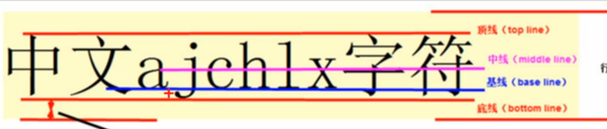
我没有设置vertical-align!
我的vertical-align是middle!
6.图片底侧空白缝隙
Bug
图片下方默认有一段空白,原因是行内块元素(图片)会和文字基线对齐.
解决方法
vertical-align:middle/top/bottom
只要不是基线对齐就可以.display: block;
因为块级元素没有基线属性,所以不会出Bug.
7.单行文字溢出省略号显示
语法
white-space: nowrap;
[normal:自动换行,nowrap:不换行]
强制一行内显示overflow:hidden
溢出隐藏text-overflow: ellipsis
[ellipsis:省略号]
文字溢出时使用省略号.
8.多行文字溢出省略号显示(兼容性差)
语法
overflow:hidden;
text-overflow: ellipsis;
/*弹性伸缩盒子模型*/
display: -webkit-box;
/*限制文本行数*/
-webkit-line-clamp: 2;
/*设置或检索伸缩盒子对象的子元素的排列方式*/
-webkit-box-orient: vertical;
9.布局技巧-margin负值
情景
布局时,可能发生盒子间边框重叠,导致1+1=2-->更粗.
语法
margin-left: -边框大小.
问题
若需要改变边框颜色(鼠标悬空变色),会发生重叠问题,越靠后越在上.
解决方案
- 倘若没有使用定位的盒子,那么每次变色的时候将这个盒子变为相对定位即可.
- 使用了定位的盒子,使用z-index调整层级即可.
10.布局技巧-文字围绕浮动元素
因为浮动本就是为了围绕文字设计的,所以只需要:
- 准备一个大盒子
- 添加一个浮动的图片
11.CSS初始化
原因
利用CSS对浏览器样式重设,保证兼容性.
使用
不用背,Ctrl+CV工程师~
HTML5新增
注意:
只有IE9+才支持.
1.语义化标签
对于搜索引擎来说,div都一样.
新的结构标签
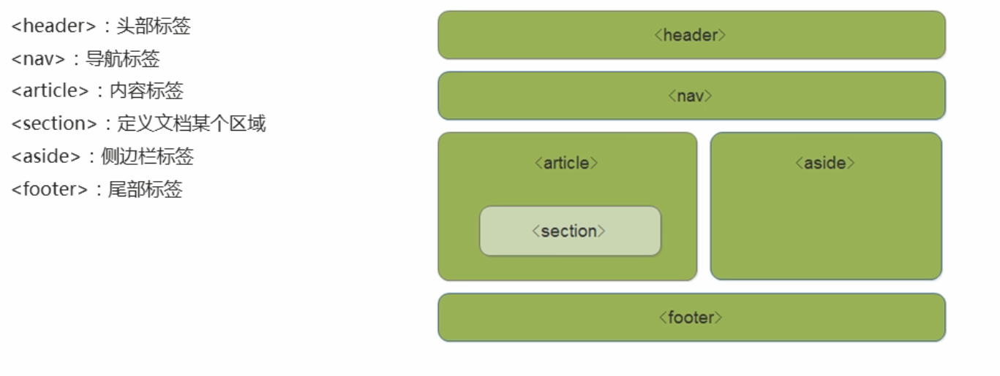
(截取自B站Pink老师视频)
这些都相当于div-->块级元素.
注意
- 这些标准针对搜索引擎.
- 可以使用多次.
- IE9中,需要转换为块级元素.
- 移动端没有兼容问题.
2.视频标签
语法
<video>
兼容
支持MP4,WebM,Ogg.
建议MP4.
代码
<video src="文件地址" controls="controls">
</video>
或者:
<video controls="controls">
<source src="1.ogg" type="video/ogg">
<source src="1.mp4" type="video/mp4">
您的浏览器不支持 video 标签.
</video>
<!-- 会自动从上到下查找可行方案.-->
参数
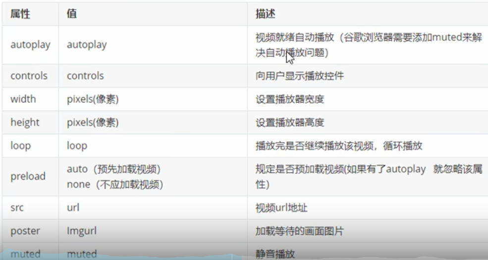
(截取自B站Pink老师视频)
注意
- chrome默认禁用autoplay:
需要允许静音播放:muted:muted
3.音频标签
语法
<audio>
兼容
支持MP3,Wav,Ogg.
建议MP3.
参数
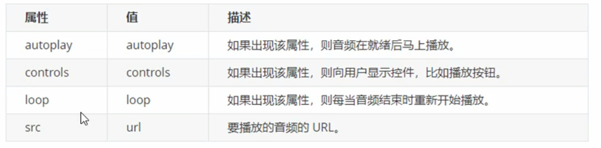
(截取自B站Pink老师视频)
注意
- chrome又禁用了自动播放...
4.input表单
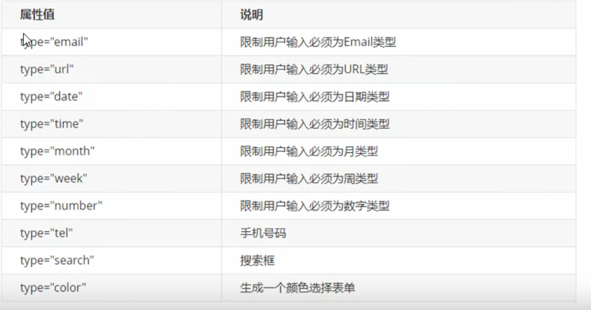
(截取自B站Pink老师视频)
5.表单属性
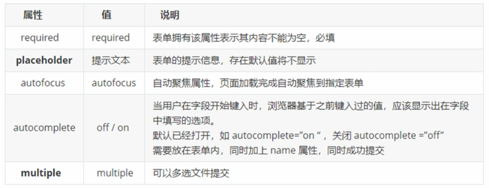
(截取自B站Pink老师视频)
CSS3新增
类,属性,伪类权重都是0010.
1.属性选择器
根据元素特定属性选择元素.
语法
元素[元素拥有的属性]
会选择有该属性的元素.元素[元素拥有的属性=值]
会选择有该属性且为该值的元素.元素[元素拥有的属性^=值]
会选择有该属性且值是属性值的开头的元素.元素[元素拥有的属性$=值]
会选择有该属性且值是属性值的结尾的元素.元素[元素拥有的属性*=值]
会选择有该属性且属性值里包含值的元素.
注意
[元素拥有的属性=值]这玩意才是属性选择器,前面的元素是单独.故整体的权重为0010+前面选择器权重.
2.结构伪类选择器
根据文档结构选择元素.
语法
父元素 子元素:first-child
选择父元素里第一个子元素.父元素 子元素:last-child
选择父元素里最后一个子元素.-
父元素 子元素:nth-child(n)
选择父元素里第n个子元素.(从1开始!) -
父元素 类型:first-of-type
选择父元素里该类型的第一个. 父元素 类型:last-of-type
选择父元素里该类型的最后一个.父元素 类型:nth-of-type(n)
选择父元素里该类型的第n个.(从1开始!)
nth-child(n)/nth-of-type(n)详解
n:语法
- 数字
- 公式
- odd(奇数)/even(偶数)
n为公式的情况
- 若为公式,n会从0开始递增加一代入公式, 类似于通项公式.
-
不需要乘号,直接是数学里的简写形式.
5n 5的倍数
n+3 从3开始
-n+3 3之前所有
child和type的区别
- child相对于子元素独立,它不在乎子元素是谁,只关心父元素.因此first-child选择的永远是父元素的第一个,但倘若子元素与child选出的不同,则将不会被选择.
- type是相对类型而言的,它会选择该类型下面的第几个.
- 在盒子里仅一种元素的情况下,优先选择child(如无序列表);反之type.
3.伪元素选择器
利用CSS创建新标签元素,而不需要html标签.
分类
::before
放到父盒子里面的前面::after
放到父盒子里面的后面
注意
- 它创建一个元素,是盒子,但是是行内元素.
- 无法在文档树里找到.
- 语法:
element::before{} - 必须有content属性.
::before/::after权重是0001.- 若要实现hover后设置before:
选择器:hover::before表示当鼠标经过选择器选中的盒子,里面的before...(不能把hover和before换位置)
4.盒子模型 border-box
之前的盒子,加入margin/padding会变大,还得减去.
语法
box-sizing: content-box/border-box
默认是content-box,即盒子最终大小=边框+内边距+内容大小.
设置为border-box就不会撑大盒子了.
5.图片模糊处理
filter 函数();
--> filter: blur(数值px)
数值越大越模糊.
6.calc函数
进行计算. 支持四则运算.
width:calc(100% - 80px)
注意:运算符两边一定要有空格!
7.CSS3过渡
transition:要过渡的属性 花费时间 运动曲线 何时开始
- 属性: 宽度/高度/内外边距...
- 花费时间:必须写单位(s)
- 运动曲线 (默认ease可省略)
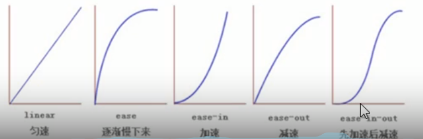
(截取自B站Pink老师视频) - 何时开始(延迟时间,可以省略,单位s)
- 需要变化两个时,使用逗号并列参数.
transition: width 1s linear ,background-color 1s ease; - 需要所有都变化,用all即可.
- 给元素设定好这个参数后,当值变化就会有过渡效果.
尝试一下:
<style>
.trans div{
width: 100px;
height: 100px;
background-color: red;
}
.trans div:nth-of-type(2n+1){
background-color: green;
}
.trans1:hover{
width: 100%;
transition: width 1s linear ,background-color 1s ease;
}
.trans2:hover{
width: 100%;
transition: width 1s ease ;
}
.trans3:hover{
width: 100%;
transition: width 1s ease-in ;
}
.trans4:hover{
width: 100%;
transition: width 1s ease-out ;
}
.trans5:hover{
width: 100%;
transition: width 1s ease-in-out ;
}
</style>
<div class="trans">
<div class="trans1"></div>
<div class="trans2"></div>
<div class="trans3"></div>
<div class="trans4"></div>
<div class="trans5"></div>
</div>
尝试一下变色:
8.广义的HTML5
- 广义的HTML5=HTML本身+CSS3+JS
9.2D转换
分类
- translate
移动 - rotate
旋转 - scale
缩放
translate
改变元素位置,类似定位.
语法:
transform: translate( x, y);
transform: translateX( x);
transform: translateY( y);
[transform: 变换式,translate: 变换]
尝试一下:
最大的优点:不会影响其他盒子的位置.
rotate
改变元素位置,类似定位.
语法:
transform: rotate( 度数);
单位:deg,正值代表顺时针.
[rotate: 旋转]
尝试一下:
最大的优点:不会影响其他盒子的位置.
利用旋转制造三角
制作一半的正方形边框,旋转即可.
设置转换中心点
transform-origin: x y;
默认值: 50% 50%,即元素中点.
原点是左上角.
可以设置像素/百分比/方位名词.
scale
transform: scale( x, y);
- 填入倍数.
- 只写一个参数,相当于给两个都是这个参数.
优势
- 传统的修改宽高度会影响下面盒子,且中心点只能是左上角.而scale不会,且中心店可以改变.
综合性写法
transform: translate() rotate() scale()
需要把位移放在前面,因为会影响变换中心点.
10.动画
定义动画
@keyframes 动画名称
{
/*动画开始*/
0%{
transform: translate(0px);
}
/*动画结束*/
100%{
transform: translate(100px);
}
}
调用动画
/*调用动画*/
animation-name: 动画名称;
/*持续时间*/
animation-duration: 时间(s/ms);
刷新查看:
注意
- 也可以使用from/to,相当于0%/100%.
- 可以通过多个百分比设定不同运动状态.
- 里面变换的状态写的是相对与最初的变化,而不是运动到此时.
- 百分比就是总时间的划分.
常见属性
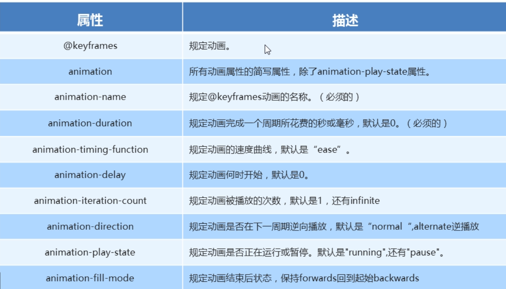
[infinite:无限的]
简写
animation: 动画名称 持续时间 运动曲线 何时开始 播放次数 是否反方向 动画起始或停止的状态
注意:简写里没有animation-play-state,其他都有.
速度曲线--steps步长
指定了时间函数中的间隔步长.就是分几步完成该动画.
11.3D转换
特点
- 近大远小
- 物体存在相互遮挡
- 屏幕向外面是正值
3D移动 translate3d
transform: translateX/Y/Z/3d()
translateZ一般是px单位,而不是百分比.
3d里三个值不能省略,没有就写0.
透视 perspective
- 模拟人眼观察物体
- 视距越大,物体越小(近大远小).
- 透视单位:像素.
- 写在父元素上面
3d旋转
语法
transform: rotateX(xxdeg);
transform: rotateY(xxdeg);
transform: rotateZ(xxdeg);
transform: rotate3d(x,y,z,xxdeg);
分别代表绕哪个轴旋转.
rotateZ和2d的rotate差不多.
rotate3d的前3个参数构成一个空间矢量.这允许它绕任意轴转动.此时xyz没有单位,之间的比例才是重要的.
左手法则
对对对,就是物理那个...大拇指朝向正方向,四指是旋转方向.
3d呈现
transform-style
- 控制子元素是否开启三维立体环境
transform-style: flat
默认不开启3d立体空间transform-style: preserve-3d
子元素开启立体空间
注意:
- 代码写给父级,影响子盒子
12.浏览器私有前缀
私有前缀
- -moz-
火狐浏览器 - -ms-
IE浏览器 - -webkit-
safari & chrome - -o-
Opera浏览器
提倡语法
-moz-border-radius
-webkit-border-radius
-o-border-radius
border-radius
先写私有前缀,提高兼容性.